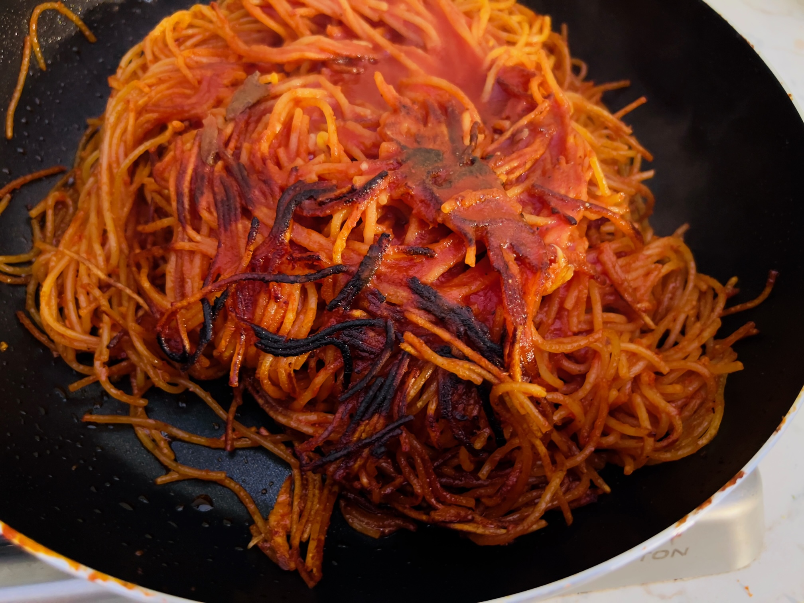

Spaghetti all'assassina

Description:
Spaghetti all'assassina, also known as spaghetti bruciati, is a Barese spaghetti dish.
Its preparation is markedly different from other spaghetti dishes; instead of being boiled in salted water and finished in sauce,
the pasta is cooked directly in the pan (traditionally cast iron).
A broth typically made of tomato sauce diluted with water is gradually added to the pan as the pasta absorbs it, similar to a risotto.
As the spaghetti absorbs the sauce, it cooks directly on the pan surface, developing significant browning and a distinctive,
crispy texture unique among pasta dishes.
Ingredients:
- 300g Spaghetti 11oz
- 1-2 red hot chilli peppers
- 2 cloves of garlic
- 150 g Tomato concentrate 5oz
- 1/2 Bottle of tomato passata
- Salt
- Pepper
- Extra virgin olive oil
- Stracciatella cheese
Steps:
-
Bring 1 liter (4 cups) of water to boil in a large pot.
-
Once boiling, add the tomato concentrate to the pot
and cook for less than 10 minutes and then take off heat and put to the side.
-
Cut the red hot chilli pepper into nice thin strips and finely chop the garlic cloves.
-
In a cast iron skillet or large steel pan, add about 10-15 tablespoons of extra virgin olive oil.
-
Bring the pan up to high heat.
Once hot, add the garlic and the chilli pepper into the olive oil and cook for 20 seconds.
-
Add the tomato passata to the pan and cook for 2-3 minutes while stirring to help reduce the sauce.
Keep the pan on high heat and let the sauce create bubbles.
-
Add the spaghetti into the pan by putting it down in a flat,
even layer and begin to push the sauce on top of the pasta and cook for about 4 minutes.
-
Roll over your pasta to start cooking the other side.
-
Next, begin to slowly add the sauce from the tomato concentrate and water into the pan, but don't move the pasta.
Let it sink flat in the pan and cook.
-
Add a little rock salt and a generous amount of pepper into the pan
and periodically push the sauce back on top of the pasta while you cook.
-
Push the pasta closer together and continue to cook as the pasta will continue to absorb the sauce.
-
Let the spaghetti cook for 1-2 minutes without much sauce in the pan to help the pasta get crispy.
-
Then, continue to add in the tomato concentrate sauce.
The pasta should be cooked for a maximum of 8-10 minutes from the moment it is in the pan.
-
Stir the pasta and spread it out around the pan so it starts to toast and get a little extra crunchiness.
-
Put extra virgin olive oil over top of the past then remove it from the pan and plate it up.
-
Top with extra virgin olive oil, black pepper, and a dollop of Stracciatella cheese.